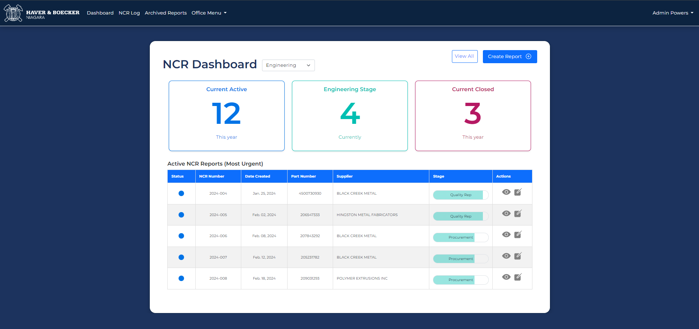

Haver & Boecker NCR Log System
About the Project
This business system was created for Haver & Boeker, a company that specializes in mineral processing. They were looking for an application that would be able to assist with the creation of their NCR reports. The system is designed to create, update, and track the NCRs throughout each stage of the report. There is also additional functionality for voiding and archiving these reports. This was a group project with five other students, and I had the role of designer and presenter. Using MVC, ASP.net and C-sharp, we were able to create what they were looking for while keeping certain accessibility standards in mind. A main function that really enhanced our application was the PDF creation. I developed this functionality, allowing the generation of PDF versions of the reports. This feature was built using HTML and CSS, allowing the PDFs to dynamically receive and display the data.
Languages Used
MVC ASP.NET HTML CSS C#